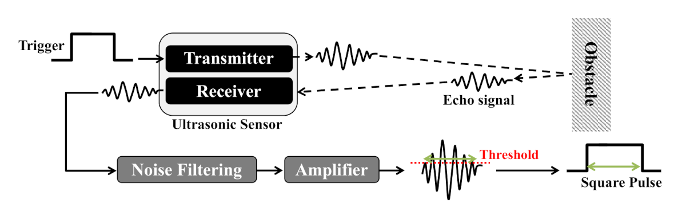
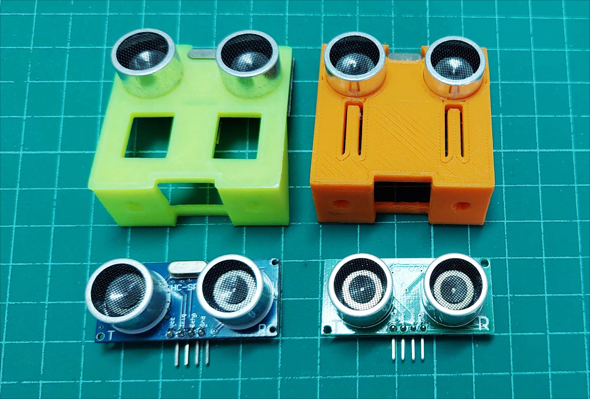
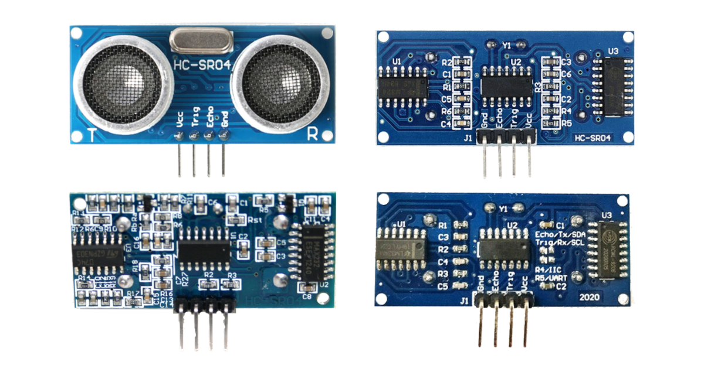
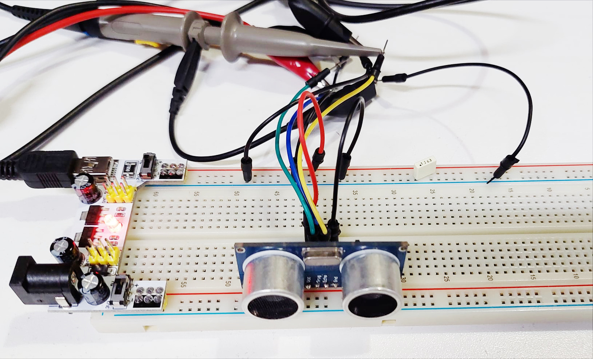
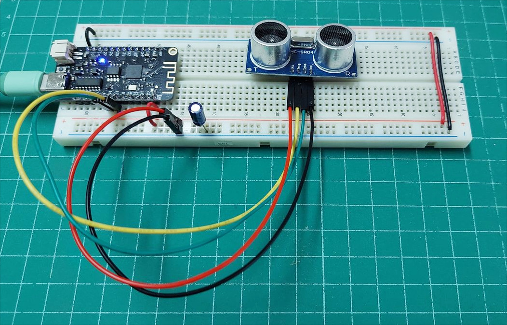
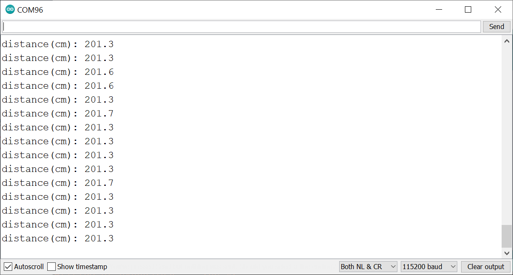
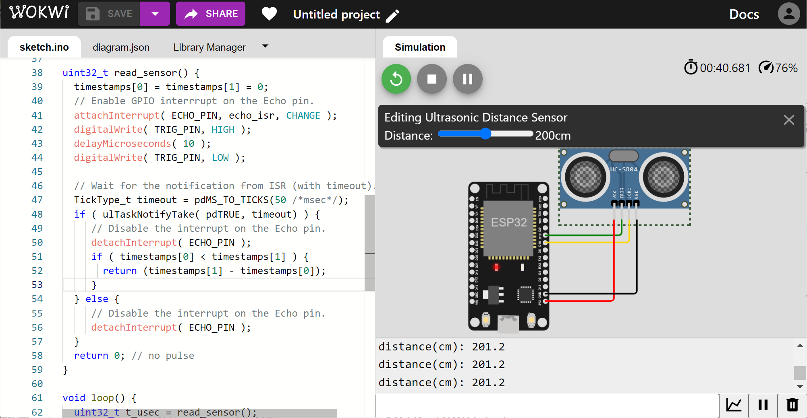
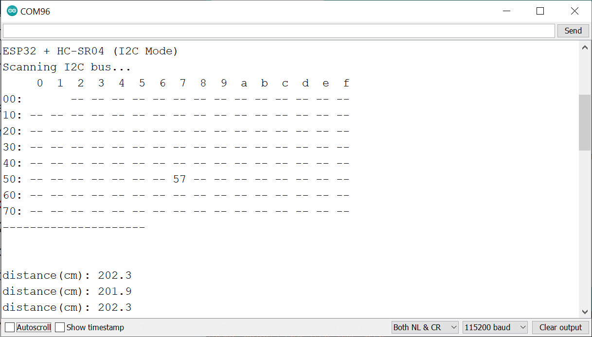

การใช้งานโมดูล HC-SR04 Ultrasonic Sensor#
▷ HC-SR04#
บทความนี้นำเสนอการใช้งาน HC-SR04 ซึ่งเป็นโมดูลเซนเซอร์อัลตราโซนิก (Ultrasonic Sensor Module) สำหรับการวัดระยะห่างจากวัตถุด้วยคลื่นเสียงอัลตราโซนิก
อุปกรณ์เซนเซอร์อัลตราโซนิก ใช้คลื่นเสียงในย่านความถี่ 25kHz ถึง 40kHz โดยประมาณ ซึ่งเป็นความถี่ที่มนุษย์ไม่สามารถได้ยิน และมีหลักการทำงานโดยทั่วไปคือ การตรวจจับเสียงสะท้อนกลับจากวัตถุกีดขวางที่อยู่ด้านหน้า หลังจากที่ได้มีการส่งคลื่นเสียงออกไปจากตัวส่ง การจับเวลาระหว่างการส่งคลื่นเสียงออกไปและได้รับสัญญาณเสียงสะท้อนกลับมา สามารถนำไปใช้ในการคำนวณระยะทางระหว่างอุปกรณ์เซนเซอร์และวัตถุกีดขวางได้
โมดูลเซนเซอร์อัลตราโซนิก มีตัวส่งและตัวรับคลื่นเสียงหนึ่งคู่ (เรียกว่า Trasmitter และ Receiver ตามลำดับ) มีลักษณะเป็นทรงกระบอกขนาดเส้นผ่าศูนย์กลาง เช่น 16 มม. เป็นต้น (แต่บางรุ่นก็มีตัวส่งและตัวรับรวมไว้ด้วยกัน เรียกว่า Transceiver)
เมื่อได้รับสัญญาณกระตุ้น (Trigger) ตัวส่งของโมดูลเซนเซอร์อัลตราโซนิก จะสร้างคลื่นเสียงที่มีรูปแบบการแพร่กระจายของคลื่นเสียงที่มีมุมกว้างออกไปตามระยะทางที่เพิ่มขึ้น โดยวัดเป็นมุมจากแนวเส้นตรงตัวฉากกับตัวอุปกรณ์ เรียกว่า Beam Angle หรือ Radiation Angle ( เช่น มีมุมกว้างประมาณ 15 องศา หรือมากกว่า เป็นต้น

รูป: หลักการทำงานของโมดูลเซนเซอร์อัตราโซนิก (Source: IEEE Access)
ตัวอย่างการประยุกต์ใช้งานของเซนเซอร์อัลตราโซนิกได้แก่ การตรวจจับวัตถุกีดขวางของหุ่นยนต์เคลื่อนที่ การวัดระดับของเหลวในถังบรรจุ การวัดระดับน้ำใต้สะพาน การวัดระยะความสูงของโดรนหลายใบพัดขณะลงจอด อุปกรณ์ตรวจสอบสิ่งกีดขวางด้านหลังของยานยนต์ขณะถอยหลัง เป็นต้น
โมดูล HC-SR04 เมื่อมองดูจากด้านหน้า จะมีลักษณะเหมือนกัน แต่ให้สังเกตจากด้านหลัง จะมองเห็นไอซีหรือวงจรอิเล็กทรอนิกส์ บางรุ่นจะใช้กับแรงดันไฟเลี้ยง 5V เท่านั้น แต่โมดูลที่ได้นำมาทดลองใช้งาน สามารถใช้ได้กับแรงดันไฟเลี้ยง 3V ถึง 5V ด้านหลังของโมดูลมีไอซี RCWL-9206 (Communication IC), RCWL-9300A (MCU) และ LM324 (Quad Op-Amp)
- แรงดันไฟเลี้ยง (VCC): 3.3V หรือ 5V (ใช้กระแสไฟฟ้าประมาณ 2.2mA @3.3V)
- ระยะทางที่วัดได้ (Measurement Range): เริ่มต้นตั้งแต่ 2cm ถึงประมาณ 450cm
- ความละเอียดของค่าที่วัดได้ (Resolution): 0.3cm
- โหมดการทำงาน: Pulse (Trigger / Echo)
- คอนเนกเตอร์มี 4 ขา (2.54mm pin spacing)
- Pin1: VCC
- Pin2: Trigger / SCL / RX
- Pin3: Echo / SDA / TX
- Pin4: GND


รูป: ตัวอย่างโมดูลเซนเซอร์ HC-SR04 และการเปรียบเทียบด้านหลังของโมดูลเซนเซอร์ที่มีความแตกต่างกัน
ด้านหลังของโมดูลมี Solder Pads สำหรับเอาไว้บัดกรีตัวต้านทาน 10kΩ แบบ SMD (0603) ที่ตำแหน่ง R4 หรือ R5 เพื่อให้เลือกใช้งานโหมดI2C หรือ UART ตามลำดับ ในเบื้องต้นได้เลือกใช้งานโหมด GPIO (default) ที่ใช้ขาสัญญาณ Trigger และ Echo
การทำงานในโหมด GPIO หรือ Pulse จะต้องส่งสัญญาณพัลส์ไปยังขา Trigger ของโมดูลเซนเซอร์ เพื่อเริ่มต้นการวัดระยะทาง ซึ่งจะมีการส่งคลื่นเสียงออกไป (ความถี่ประมาณ 40kHz) จากนั้นก็รอสัญญาณพัลส์ที่ขา Echo เป็นสัญญาณตอบกลับ และใช้ในการวัดความกว้างของสัญญาณดังกล่าว ความกว้างของสัญญาณพัลส์ที่ขา Echo แปรผันตรงกับระยะเวลาในการเดินทางของคลื่นเสียง และสะท้อนกลับจากวัตถุกีดขวาง
▷ การวัดสัญญาณ Trigger และ Echo ของโมดูล HC-SR04#
สัญญาณพัลส์ที่มีความกว้างอย่างน้อย 10 usec (10 ไมโครวินาที) จะถูกสร้างขึ้นเพื่อใช้เป็นสัญญาณอินพุตให้โมดูล HC-SR04 และเริ่มต้นการวัดระยะห่างจากวัตถุกีดขวาง ถ้าสัญญาณพัลส์เกิดขึ้นซ้ำด้วยอัตราคงที่ (เช่น การสร้างสัญญาณด้วยเครื่องกำเนิดสัญญาณไฟฟ้า หรือเขียนโปรแกรมไมโครคอนโทรลเลอร์เพื่อสร้างสัญญาณ PWM) จะทำให้มีการวัดซ้ำเกิดขึ้นไปเรื่อย ๆ ลองมาดูตัวอย่างรูปคลื่นสัญญาณที่ขา Trigger และสัญญาณ Echo ที่ตามมา

รูป: การทดลองสร้างสัญญาณอินพุตสำหรับ Trigger และวัดสัญญาณที่ขา Trigger และ Echo ของโมดูล HC-SR04

รูป: ตัวอย่างการวัดคลื่นสัญญาณ Trigger (ช่อง 1) และ Echo (ช่อง 2) โดยใช้เครื่องออสซิลโลสโคปแบบดิจิทัล
จากรูปคลื่นสัญญาณ จะเห็นได้ว่า เมื่อโมดูลได้รับสัญญาณพัลส์ที่ขา Trigger จะเกิดสัญญาณพัลส์ที่ขา Echo ตามมา โดยเว้นระยะห่างประมาณ 2.2 msec ความกว้างพัลส์ของสัญญาณ Echo นั้นขึ้นอยู่กับระยะห่างจากวัตถุกีดขวางที่อยู่ข้างหน้า
ถัดไปเป็นรูปคลื่นสัญญาณพัลส์ที่ขา Trigger และอีกสัญญาณหนึ่งคือ สัญญาณพัลส์เพื่อสร้างคลื่นเสียงที่ตัวส่ง โดยมีระยะห่างจากสัญญาณแรก ประมาณ 2.2 msec สัญญาณพัลส์สำหรับสร้างคลื่นเสียง มีจำนวน 8 ไซเคิล หนึ่งไซเคิลมีความกว้าง 25 usec คิดเป็นความถี่ 40kHz

รูป: ตัวอย่างการวัดคลื่นสัญญาณ Trigger (ช่อง 1) และสัญญาณพัลส์สร้างคลื่นเสียงที่ตัวส่ง (ช่อง 2)

รูป: การวัดสัญญาณดิจิทัลสำหรับการสร้างคลื่นเสียงที่ตัวส่ง (จำนวน 8 ไซเคิล)
▷ การใช้คำสั่ง pulseIn() เพื่อวัดความกว้างพัลส์#
ถัดไปเป็นการทดลองใช้งานโมดูลเซนเซอร์ และเลือกใช้ GP16 และ GP17 ของ ESP32 เป็นขา Echo (Input) และ Trigger (Output) ตามลำดับ
ตัวอย่างโค้ดสาธิตมีดังนี้
#define SOUND_SPEED (342)
#define US_TO_CM(t) ((SOUND_SPEED*t)/20000.0)
#define TIMEOUT_USEC (40000)
#define ECHO_PIN (16)
#define TRIG_PIN (17)
void setup() {
pinMode( ECHO_PIN, INPUT );
pinMode( TRIG_PIN, OUTPUT );
Serial.begin( 115200 );
Serial.println( "\n\n\nHC-SR04 Ultrasonic Sensor Demo" );
Serial.flush();
digitalWrite( TRIG_PIN, LOW );
while ( digitalRead( ECHO_PIN) ) { delay(1); }
}
uint32_t read_sensor() {
digitalWrite( TRIG_PIN, HIGH );
delayMicroseconds( 10 );
digitalWrite( TRIG_PIN, LOW );
// Measure the HIGH pulse width (in usec)
return pulseIn( ECHO_PIN, HIGH, TIMEOUT_USEC );
}
void loop() {
uint32_t t_usec = read_sensor();
Serial.print( "distance(cm): " );
if ( t_usec == 0 ) { // no pulse detected
Serial.println( "---" );
} else {
Serial.printf( "%.1f\n", US_TO_CM(t_usec) );
}
delay(100);
}
ในโค้ดตัวอย่าง เมื่อได้สร้างสัญญาณเอาต์พุตที่ขา Trigger เป็นพัลส์ความกว้างอย่างน้อย 10 ไมโครวินาทีแล้ว
ขั้นตอนถัดไปคือ การวัดความกว้างของพัลส์ที่เกิดกับสัญญาณ Echo โดยใช้ฟังก์ชัน
pulseIn() ซึ่งเป็นคำสั่งของ Arduino API
โดยจะต้องระบุหมายเลขขา Echo สำหรับสัญญาณพัลส์ช่วงที่เป็น HIGH
และมีการกำหนดระยะเวลาในการรอเพื่อวัดความกว้างของพัลส์ที่เกิดขึ้น (Pulse Width Measurement)
และกำหนดค่าสำหรับการรอ ("Waiting Timeout") เช่น ไม่เกิน 40000 (ไมโครวินาที)
ความกว้างของสัญญาณพัลส์ คือ ระยะเวลาในการเดินทางไปและกลับของคลื่นเสียงอัตราโซนิกเมื่อสะท้อนกลับจากวัตถุกีดขวางด้านหน้า ถ้ากำหนดให้ความเร็วเสียงในอากาศ () เช่น 342 เมตร/วินาที โดยประมาณ (ขึ้นอยู่กับปัจจัย เช่น อุณหภูมิและความชื้นสัมพัทธ์ของอากาศด้วย) จะสามารถเขียนสูตรคำนวณได้ดังนี้
หรือเขียนใหม่ได้เป็น

รูป: อุปกรณ์ที่ได้นำมาทดลอง (บอร์ดไมโครคอนโทรลเลอร์ WeMos Lolin32 Lite และโมดูล HC-SR04)
▷ การใช้อินเทอร์รัพท์เพื่อวัดความกว้างพัลส์#
การใช้คำสั่ง pulseIn() ของ Arduino API เป็นการทำคำสั่งซ้ำ
เพื่อคอยตรวจสอบดูสถานะลอจิกที่ขาสัญญาณ Echo
และดูว่า มีการเปลี่ยนแปลงขอบขาขึ้น (Rising Edge) และขอบขาลง (Falling Edge)
หรือไม่ และเมื่อเกิดเหตุการณ์ทั้งสองกรณี ก็จะมีการบันทึกเวลา หรือ Timestamps แล้วนำมาลบกัน
เพื่อให้ได้ความกว้างของพัลส์ (Pulse Width)
โค้ดตัวอย่างนี้สาธิตการเปิดใช้งานอินเทอร์รัพท์ของไมโครคอนโทรลเลอร์ โดยใช้คำสั่งของ Arduino API
เช่น attachInterrupt() และมีการสร้างฟังก์ชัน echo_isr() เพื่อทำหน้าที่เป็น
Interrupt Service Routine (ISR)
ซึ่งจะถูกเรียกให้ทำงานเมื่อเกิดเหตุการณ์ขอบขาขึ้นหรือขาลงที่ขา Echo
เมื่อฟังก์ชัน echo_isr() ทำงาน ก็จะอ่านค่าเวลาของระบบ หน่วยเป็นไมโครวินาที แล้วบันทึกลงในอาร์เรย์ชื่อ
timestamps ในตำแหน่ง 0 ถ้าเกิดเหตุการณ์ขอบขาขึ้น และในตำแหน่ง 1 ถ้าเกิดขอบขาลง
เมื่อต้องการวัดระยะทาง ก็ให้สร้างสัญญาณพัลส์ที่ขา Trigger แล้วเปิดใช้งานอินเทอร์รัพท์
และรอเวลาประมาณ 50 มิลลิวินาที หากมีเหตุการณ์ขอบขาขึ้นและขาลงเกิดขึ้นตามลำดับที่ขา Echo
ก็ให้อ่านค่าเวลาที่ได้บันทึกไว้ในอาร์เรย์ที่ตำแหน่ง timestamps[1] และ
timestamps[0] แล้วนำค่ามาลบกัน จึงจะได้ความกว้างของพัลส์ที่เกิดขึ้น
#define SOUND_SPEED (342)
#define US_TO_CM(t) ((SOUND_SPEED*t)/20000.0)
#define ECHO_PIN (16)
#define TRIG_PIN (17)
void setup() {
pinMode( ECHO_PIN, INPUT );
pinMode( TRIG_PIN, OUTPUT );
Serial.begin( 115200 );
Serial.println( "\n\n\nHC-SR04 Ultrasonic Sensor Demo" );
Serial.flush();
digitalWrite( TRIG_PIN, LOW );
delay(20);
while ( digitalRead( ECHO_PIN) ) { delay(1); }
}
volatile uint32_t timestamps[2] = {0,0};
IRAM_ATTR void echo_isr() { // ISR code executed from SRAM
uint32_t t_now = micros(); // Get the current time (usec)
if ( digitalRead( ECHO_PIN ) ) { // rising-edge event
timestamps[0] = t_now; // Save the timestamp.
} else { // falling-edge event
timestamps[1] = t_now; // Save the timestamp.
}
}
uint32_t read_sensor() {
// Clear timestamps for rising-edge and falling-edge events.
timestamps[0] = timestamps[1] = 0;
// Enable GPIO interrrupt on the Echo pin.
attachInterrupt( ECHO_PIN, echo_isr, CHANGE );
// Create a short pulse on the Trigger pin.
digitalWrite( TRIG_PIN, HIGH );
delayMicroseconds( 10 );
digitalWrite( TRIG_PIN, LOW );
// Wait for 50 msec.
delay(50);
// Disable the interrupt on the Echo pin.
detachInterrupt( ECHO_PIN );
// Check the timestamps for valid pulse width
if ( timestamps[0] < timestamps[1] ) {
return (timestamps[1] - timestamps[0]);
}
return 0; // no pulse
}
void loop() {
uint32_t t_usec = read_sensor();
Serial.print( "distance(cm): " );
if ( t_usec == 0 ) { // no pulse detected
Serial.println( "---" );
} else {
Serial.printf( "%.1f\n", US_TO_CM(t_usec) );
}
delay(100);
}
▷ การใช้คำสั่ง FreeRTOS เพื่อสื่อสารระหว่าง ISR และทาสก์หลักของโปรแกรม#
Arduino-ESP32 ใช้ระบบปฏิบัติการเวลาจริง FreeRTOS เป็นพื้นฐานในการทำงาน
มีการจัดการในรูปแบบของทาสก์ (Task) และการทำงานของคำสั่งต่าง ๆ ในฟังก์ชัน setup()
และ loop() เป็นหน้าที่ของทาสก์หลัก (Main Task)
โค้ดต่อไปนี้สาธิตการใช้คำสั่งของ FreeRTOS เพื่อสื่อสารกันระหว่างการทำงานของฟังก์ชัน
echo_isr() และทาสก์หลักของโปรแกรม เช่น vTaskNotifyGiveFromISR()
และ ulTaskNotifyTake()
การทำคำสั่ง ulTaskNotifyTake() โดยทาสก์หลัก
เป็นการรอให้มีการแจ้งเหตุการณ์ (Event Notification)
จาก ISR แต่มีการกำหนดระยะเวลารอไว้ด้วย (Timeout)
เช่น 50 Ticks ซึ่งจะเท่ากับ 50 มิลลิวินาที
(โดยทั่วไปแล้ว 1 Tick ถูกกำหนดไว้ให้เท่ากับ 1 มิลลิวินาที สำหรับ FreeRTOS
ที่นำมาใช้งานกับ Arduino-ESP32)
#define SOUND_SPEED (342)
#define US_TO_CM(t) ((SOUND_SPEED*t)/20000.0)
#define ECHO_PIN (16)
#define TRIG_PIN (17)
volatile uint32_t timestamps[2] = {0,0};
TaskHandle_t mainTask = NULL;
void setup() {
pinMode( ECHO_PIN, INPUT );
pinMode( TRIG_PIN, OUTPUT );
Serial.begin( 115200 );
Serial.println( "\n\n\nHC-SR04 Ultrasonic Sensor Demo" );
Serial.flush();
digitalWrite( TRIG_PIN, LOW );
delay(20);
while ( digitalRead( ECHO_PIN) ) { delay(1); }
// Get the main task handle.
mainTask = xTaskGetCurrentTaskHandle();
}
IRAM_ATTR void echo_isr() { // ISR code executed from SRAM
uint32_t t_now = micros();
if ( digitalRead( ECHO_PIN ) ) { // rising-edge event
timestamps[0] = t_now;
} else { // falling-edge event
timestamps[1] = t_now;
BaseType_t xHigherPriorityTaskWoken = pdFALSE;
// Notify the main task.
vTaskNotifyGiveFromISR( mainTask, &xHigherPriorityTaskWoken );
if (xHigherPriorityTaskWoken) {
portYIELD_FROM_ISR();
}
}
}
uint32_t read_sensor() {
timestamps[0] = timestamps[1] = 0;
// Enable GPIO interrrupt on the Echo pin.
attachInterrupt( ECHO_PIN, echo_isr, CHANGE );
digitalWrite( TRIG_PIN, HIGH );
delayMicroseconds( 10 );
digitalWrite( TRIG_PIN, LOW );
// Wait for the notification from ISR (with timeout).
TickType_t timeout = pdMS_TO_TICKS(50 /*msec*/);
if ( ulTaskNotifyTake( pdTRUE, timeout) ) {
// Disable the interrupt on the Echo pin.
detachInterrupt( ECHO_PIN );
if ( timestamps[0] < timestamps[1] ) {
return (timestamps[1] - timestamps[0]);
}
} else {
// Disable the interrupt on the Echo pin.
detachInterrupt( ECHO_PIN );
}
return 0; // no pulse
}
void loop() {
uint32_t t_usec = read_sensor();
Serial.print( "distance(cm): " );
if ( t_usec == 0 ) { // no pulse detected
Serial.println( "---" );
} else {
Serial.printf( "%.1f\n", US_TO_CM(t_usec) );
}
delay(100);
}

รูป: ตัวอย่างข้อความเอาต์พุต

รูป: ตัวอย่างการจำลองการทำงานด้วย Wokwi Simulator โดยใช้บอร์ด ESP32 DevKit-V1 (ใช้ขา GPIO18 / GPIO19 สำหรับ ECHO / TRIG ตามลำดับ)
▷ การสร้างทาสก์ใน FreeRTOS เพื่ออ่านค่าจากโมดูลเซนเซอร์#
โค้ดตัวอย่างถัดไป สาธิตการใช้คำสั่งของ FreeRTOS เพื่อสร้างทาสก์ใหม่สำหรับการอ่านค่าจากโมดูลเซนเซอร์ ในขณะที่ทาสก์หลักมีหน้าที่แค่ทำให้ LED กระพริบได้ด้วยอัตราคงที่ หลังจากที่ได้สร้างทาสก์สำหรับอ่านค่าเซนเซอร์แล้ว
ESP32 มีซีพียูแบบ 2 แกน หรือ Dual CPU Cores (หมายเลข 0 กับ 1) โดยปรกติแล้ว ทาสก์หลักทำงานด้วย Core 1 และในตัวอย่างนี้ ทาสก์สำหรับอ่านค่าเซนเซอร์ และโค้ดของฟังก์ชัน ISR จะทำงานบน Core 0
#define SOUND_SPEED (342)
#define US_TO_CM(t) ((SOUND_SPEED*t)/20000.0)
#define ECHO_PIN (16)
#define TRIG_PIN (17)
#ifndef LED_BUILTIN
#define LED_BUILTIN (22)
#endif
volatile uint32_t timestamps[2] = {0,0};
TaskHandle_t task_handle = NULL;
void sensor_task_func( void *parameter ) {
Serial.printf( "Sensor task runs on Core %d.\n", xPortGetCoreID() );
delay(10);
for (;;) {
uint32_t t_usec = read_sensor();
Serial.print( "distance(cm): " );
if ( t_usec == 0 ) { // no pulse detected
Serial.println( "---" );
} else {
Serial.printf( "%.1f\n", US_TO_CM(t_usec) );
}
delay(100);
}
}
void setup() {
pinMode( LED_BUILTIN, OUTPUT );
pinMode( ECHO_PIN, INPUT );
pinMode( TRIG_PIN, OUTPUT );
Serial.begin( 115200 );
Serial.println( "\n\n\nHC-SR04 Ultrasonic Sensor Demo" );
Serial.flush();
digitalWrite( TRIG_PIN, LOW );
delay(20);
while ( digitalRead( ECHO_PIN) ) { delay(1); }
Serial.printf( "Main task runs on Core %d.\n", xPortGetCoreID() );
// Create a new task that runs on Core 0.
xTaskCreatePinnedToCore(
sensor_task_func,
"Sensor Task",
10000 /* task stack size */,
NULL,
1 /* task priority */,
&task_handle,
0 /* Core 0 */ );
}
IRAM_ATTR void echo_isr() { // ISR code executed from SRAM
uint32_t t_now = micros();
core_id = xPortGetCoreID();
if ( digitalRead( ECHO_PIN ) ) { // rising-edge event
timestamps[0] = t_now;
} else { // falling-edge event
timestamps[1] = t_now;
BaseType_t xHigherPriorityTaskWoken = pdFALSE;
// Notify the main task.
vTaskNotifyGiveFromISR( task_handle, &xHigherPriorityTaskWoken );
if (xHigherPriorityTaskWoken) {
portYIELD_FROM_ISR();
}
}
}
uint32_t read_sensor() {
timestamps[0] = timestamps[1] = 0;
// Enable GPIO interrrupt on the Echo pin.
attachInterrupt( ECHO_PIN, echo_isr, CHANGE );
digitalWrite( TRIG_PIN, HIGH );
delayMicroseconds( 10 );
digitalWrite( TRIG_PIN, LOW );
// Wait for the notification from ISR (with timeout).
if ( ulTaskNotifyTake( pdTRUE, 50 /* Timeout (ticks) */ ) ) {
// Disable the interrupt on the Echo pin.
detachInterrupt( ECHO_PIN );
if ( timestamps[0] < timestamps[1] ) {
return (timestamps[1] - timestamps[0]);
}
} else {
// Disable the interrupt on the Echo pin.
detachInterrupt( ECHO_PIN );
}
return 0; // no pulse
}
void loop() {
// Main task toggles the LED state.
digitalWrite( LED_BUILTIN, !digitalRead(LED_BUILTIN) );
delay(100);
}
▷ การใช้งานโมดูลเซนเซอร์ในโหมด I2C#
หากต้องการลองใช้งานโมดูล HC-SR04 ในโหมด I2C ซึ่งจะทำงานเป็นอุปกรณ์
I2C Slave และมีแอดเดรสเท่ากับ 0x57 ไมโครคอนโทรลเลอร์ ESP32
จะทำหน้าที่เป็นอุปกรณ์ I2C Master ในการเชื่อมต่อด้วยบัส I2C
และใช้สัญญาณ SDA (Data) และ SCL (Clock)
ในการทดลองใช้งานจริง จะต้องมีการบัดกรีตัวต้านทาน 10k โอห์ม
ที่ตำแหน่ง R4 บนแผงวงจรด้านหลังของโมดูล
ตัวอย่างการเขียนโค้ดมีดังนี้ โดยมีการสร้างและใช้ฟังก์ชัน i2c_scan()
เพื่อตรวจสอบดูว่า มีอุปกรณ์เชื่อมต่อกับบัส
I2C อยู่หรือไม่ จากนั้นจะใช้ฟังก์ชัน read_sensor()
ที่ถูกสร้างขึ้นมาสำหรับอ่านค่าระยะทางจากเซนเซอร์
และได้ค่าเป็นเลขจำนวนเต็มบวก (หน่วยเป็นมิลลิเมตร)
#include <Wire.h>
#define I2C_SDA_PIN (16)
#define I2C_SCL_PIN (17)
#define I2C_ADDR (0x57) // default 7-bit address of the module
void setup() {
Serial.begin( 115200 );
Serial.println( "\n\n\nESP32 + HC-SR04 (I2C Mode)" );
Wire.setClock( 100000 ); // Set I2C speed to 100kHz
Wire.begin( I2C_SDA_PIN, I2C_SCL_PIN );
delay(200);
i2c_scan();
}
void i2c_scan() {
int n_devices = 0;
Serial.println( "Scanning I2C bus..." );
Serial.print( " " );
for ( uint8_t col=0; col < 16; col++ ) {
Serial.printf( "%3x", col );
}
Serial.println( "" );
uint8_t addr=0;
for( uint8_t row=0; row < 8; row++ ) {
Serial.printf( "%02x:", row << 4 );
for ( uint8_t col=0; col < 16; col++ ) {
if ( row == 0 && addr<=1 ) {
Serial.print(" ");
} else {
Wire.beginTransmission( addr );
if ( Wire.endTransmission()>0 ) {
Serial.printf( " --" );
} else {
Serial.printf( " %2x", addr );
n_devices++;
}
}
addr++;
}
Serial.println( "" );
}
Serial.println( "---------------------\n\n" );
Serial.flush();
}
uint32_t read_sensor() {
Wire.beginTransmission( I2C_ADDR );
Wire.write( 0x01 ); // Send Start meansurement command
Wire.endTransmission();
delay(100); // Wait approx. 100msec.
Wire.requestFrom( I2C_ADDR, 3 ); // Read 3 bytes
uint32_t value = 0;
if ( Wire.available() == 3 ) {
value = (value << 8) | Wire.read(); // the first byte
value = (value << 8) | Wire.read(); // the second byte
value = (value << 8) | Wire.read(); // the third byte
value /= 1000; // distance in mm.
}
Wire.endTransmission();
return value; // error
}
void loop() {
uint32_t distance = read_sensor();
if ( distance > 0 ) {
Serial.printf( "distance(cm): %3.1f\n", distance/10.0 );
}
else {
Serial.println( "distance(cm): ---" );
}
delay(100);
}

รูป: ตัวอย่างข้อความเอาต์พุต เมื่อทดลองใช้งานโมดูล HC-SR04 ในโหมด I2C
▷ กล่าวสรุป#
บทความนี้ได้นำเสนอการใช้งานโมดูลเซนเซอร์อัลตราโซนิก HC-SR04 และตัวอย่างการเขียนโค้ด Arduino Sketch สำหรับบอร์ดไมโครคอนโทรลเลอร์ ESP32 เพื่ออ่านค่าจากโมดูลเซนเซอร์ และมีรูปแบบการเขียนโค้ดได้หลายวิธี
บทความที่เกี่ยวข้อง
- การใช้งานโมดูล GY-US042v2 Ultrasonic Sensor
This work is licensed under a Creative Commons Attribution-ShareAlike 4.0 International License.
Created: 2022-10-18 | Last Updated: 2023-01-29